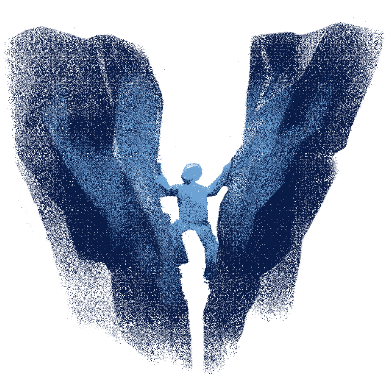
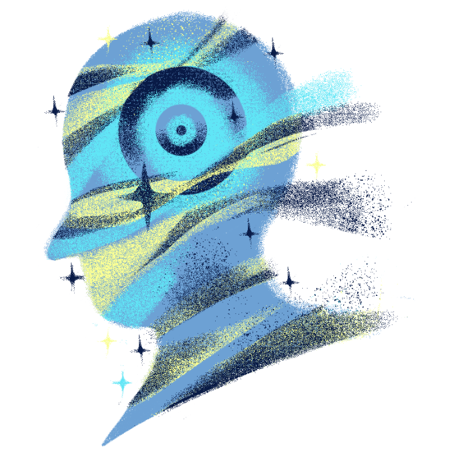
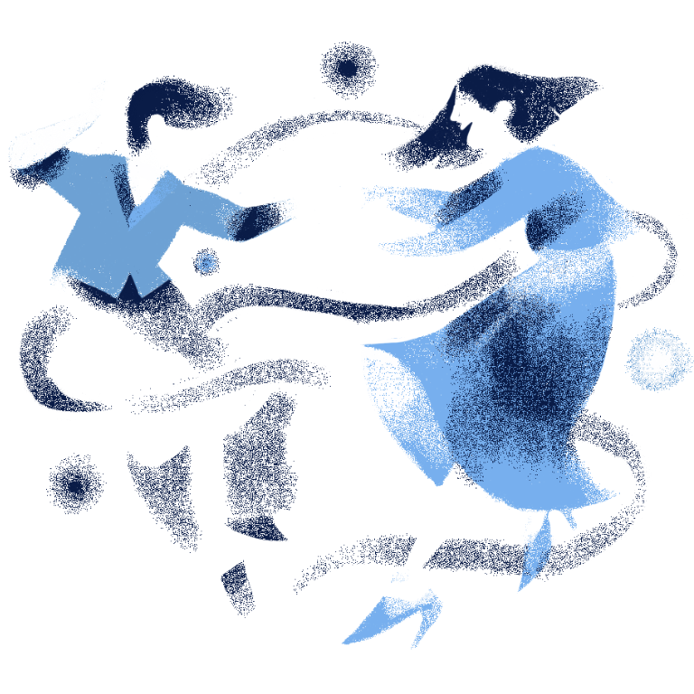

LETTING GO
Have you ever experienced carrying something for so long that your heart starts to feel heavy? Like a confession, a thought, anguish, or hatred. A similar feeling can be said while holding on to a thought that should've been said for so long but something is holding you back or while carrying fear of hurting people, such as someone you hold dear, when telling them your true thoughts. Our emotions hold our deepest thoughts, which is why honesty is one driving factor for building relationships. But holding on to something that would keep you haunted every night at 10:00pm is more than enough to keep you yearning for something you shouldn’t.
There should be no denial that letting go and accepting fate is no easy task for the heart. Everything cannot exist forever, such a nihilistic thought can hold a dark truth that prove that everything will change overtime. Emotions are, too, something that won't exist forever, especially when such feelings persist for something that drives these emotions to disarray. In simple terms, holding on to something that hurt you would just bring you to a path that would inevitably keep you from fearing change.
Everyone has different experiences in having the courage to step forward and move on. So it's no doubt that it would be difficult to ask someone to move forward when they are lost searching for hope. Sometimes, their search would only lead them to hurting themselves even more, losing even themselves in the process. Whether be it about loss, heartbreak, regret, or guilt, no one has the right to quantify their emotions, the time they take to move on, or how they deal with their emotions. What makes us human is how everyone has unique ways of letting go, the process may not be perfect, but their right to trek forward on a path they forged on their own is what builds up their confidence to be free.
Letting Go isn't Always About Love
The act of letting go is setting free of what burdens your heart and putting a closure to something that you either hold dearly, regrettably, or fiercely. People tend to cling onto emotions and feelings in the fear of unfulfilled desires or unsaid words. Which is why boundaries are often broken when people who cling for too long starts to cross the line. They fear losing something else even more than their self.
It can be painful of seeing someone break down because of loss and regret, which is why it is difficult to advice someone to simply let go of their emotions. It is never encouraged to tell someone to simply let go or move on when you have no idea what they have been through. Brushing off a pain that they might have been holding for too long can be perceived as invalidating and disrespectful. Which is why simply listening to them talk about their pain is already enough to help them move forward.
Having a medium to release your emotions is one way of letting go. Starting to become honest with yourself and learning to understand how you truly feel inside is the first step of healing. Sometimes, it is important to set the weight down and slowly decrease the burden you are carrying every once in while, breath, and slowly decipher the weight in your shoulders. You can talk to a trusted friend, write a diary or a blog, or consult a professional.
Some notes to take when letting go:
- Sometimes, the greatest act of love to ourselves and to others is to let go.
- Honesty shouldn’t be defined as showing weakness but understanding true empathy.
- Ask someone for a different perspective, something that you are not seeing for yourself.
- Change is inevitable, whether we like it or not, we have to learn to embrace it.
- We don't have to change ourselves to present a more desirable form to keep what we have lost.
- Learn to change for the betterment of yourself.
- Maybe some things are better left unsaid, it is better to know that you tried.
- Learn to embrace yourself, ask if holding on is still the right thing to do
- Don't fear that you never be able to move forward like other people, everyone walks on a different path
- Take all the time you need to be ready once again
The Shackles to Embrace and Break Free
It will always be heavy for the heart to let go of something it once cherished. It can also be difficult for the mind to let go of regret and anger. But holding on to the past will just be a shackle that will prevent us on creating a better future for ourselves and for the people involved. Breaking free shouldn’t be seen as giving up on something or someone, but a way to give them and yourself the love and forgiveness we all long for.
Always start small, it is never too late to begin working for the future. Find the people who understands you the most, gain perspectives, and build courage and hope. No one said that this journey is easy, such is life, we have to experience breaking down to build ourselves once again.

Find new perspectives and activities to build your courage

To let go is to discover new views and understand what will set you free

Find a medium where you can be truthful to yourself.